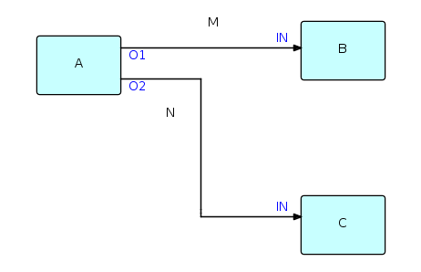

Concepts
The following diagram shows the major entities of an FBP diagram (apart from the Information Packets). Such a diagram can be converted directly into a list of connections, which can then be executed by an appropriate engine (software or hardware).

A, B and C are processes executing code components. O1, O2, and the two INs are ports connecting the connections M and N to their respective processes. It is permitted for processes B and C to be executing the same code, so each process must have its own set of working storage, control blocks, etc. Whether or not they do share code, B and C are free to use the same port names, as port names only have meaning within the components referencing them (and at the network level, of course).
M and N are what are often referred to as "bounded buffers", and have a fixed capacity in terms of the number of IPs that they can hold at any point in time.
The concept of ports is what allows the same component to be used at more than one place in the network. In combination with a parametrization capability, called Initial Information Packets (IIPs), ports provide FBP with a component reuse capability, making FBP a component-based architecture. FBP thus exhibits what Raoul de Campo and Nate Edwards of IBM Research have termed "configurable modularity".
Information Packets or IPs are allocated in what might be called "IP space" (just as Linda's tuples are allocated in "tuple space"), and have a well-defined lifetime until they are disposed of and their space is reclaimed - in FBP this must be an explicit action on the part of an owning process. IPs traveling across a given connection (actually it is their "handles" that travel) constitute a "stream", which is generated and consumed asynchronously - this concept thus has similarities to the lazy cons concept described in the 1976 article by Friedman and Wise.
IPs are usually structured chunks of data - some IPs, however, may not contain any real data, but are used simply as signals. An example of this is "bracket IPs", which can be used to group data IPs into sequential patterns within a stream, called "substreams". Substreams may in turn be nested. IPs may also be chained together to form "IP trees", which travel through the network as single objects.
The system of connections and processes described above can be "ramified" to any size. During the development of an application, monitoring processes may be added between pairs of processes, processes may be "exploded" to subnets, or simulations of processes may be replaced by the real process logic. FBP therefore lends itself to rapid prototyping.
This is really an assembly line image of data processing: the IPs travelling through a network of processes may be thought of as widgets travelling from station to station in an assembly line. "Machines" may easily be reconnected, taken off line for repair, replaced, and so on. Oddly enough, this image is very similar to that of unit record equipment that was used to process data before the days of computers, except that decks of cards had to be hand-carried from one machine to another.
Implementations of FBP may be non-preemptive or preemptive - the earlier implementations tended to be non-preemptive (mainframe and C language), whereas the latest Java implementation (see below) uses Java Thread class and is preemptive.
IIPs, alluded to above, provide a parametrization capability for processes. An IIP is defined as part of the network definition, and is associated with an input port. When a 'receive' is performed on that port, the IIP is converted into a regular IP, and can then be processed the same way as any regular IP. If a further 'receive' is performed on the same input port within the same activation of the process, the 'receive' returns a 'null' (i.e. 'end of stream').
Note: this differs from the description of IIP processing in the 2nd edition of the book, which stated that a 'receive' could only be performed once per invocation.
A recently added feature is the "dropOldest" connection attribute (this function is self-explanatory), as it does not appear in my book - this function is now available in JavaFBP, C#FBP and can be specified in DrawFBP diagrams.